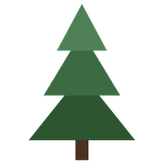

Redwood Habitat SuitabilityNorthern California Coast
Gold areas show where redwoods could naturally grow based on:
Data Sources:
• Rainfall: PRISM 800m normals
• Fog: GOES-16 Ch13−Ch7 BTD at 06–12 UTC (11 PM – 5 AM PST)
• Time Period: 2020–2024 dry seasons (May/Jun/Aug/Sep weeks)
• Resolution: 800m